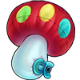
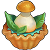
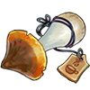
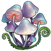
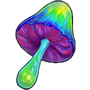

Получено: файл; исходный URL. Иллюстрация в отдельной статье ViveR_9 «Грибная коллекция»; исходный файл без перекодирования. Авторство отдельно не установлено. Страница: источник.

Грибная коллекция
Браузерная социальная версия; историческая статья; дата редакции неизвестна- Тип
- Коллекции
- Версия и дата
- Браузерная социальная версия; историческая статья; дата редакции неизвестна
Элементы коллекции















Данные по источнику · Браузерная социальная версия · историческая статья; дата редакции неизвестна
Предварительно: один материал, требуется сверка. Требуется сверка.
- Состав (источник Zombie-island)
- Надувной; Сладкая корзинка; Чайный гриб; Семейный; Радужный.
- Награда (источник Zombie-island)
- 1 Пряник; 250 Опыт.
Данные по источнику · Браузерная версия ВКонтакте; редакция не установлена · 05.10.2018 — дата публикации; дата последующей редакции неизвестна
Предварительно: Прочитана фанатская страница; вероятность находки и точная редакция игры не указаны. Схожесть с другими справочниками не установлена; независимость не предполагается.. Требуется сверка.
- Состав
- Надувной; Сладкая корзинка; Чайный гриб; Семейный; Радужный.
- Обмен
- 1 Пряник и 250 опыта.
- Получение
- Указаны задания «Батарея», «Бесконечность», «Даниэлла» и ценности Осенний презент, Подарок, Ящик, Ящик Дворника и Лукошко грибника.
- Поиск
- У друзей под «Дерево» (вариант не уточнён); палочками под Октавием или Пончиком-победителем.
- Строительство
- Источник указывает постройку «Празничная», без количества ингредиентов.
Связанные сущности
нет проверенных связей — требуется сверка.